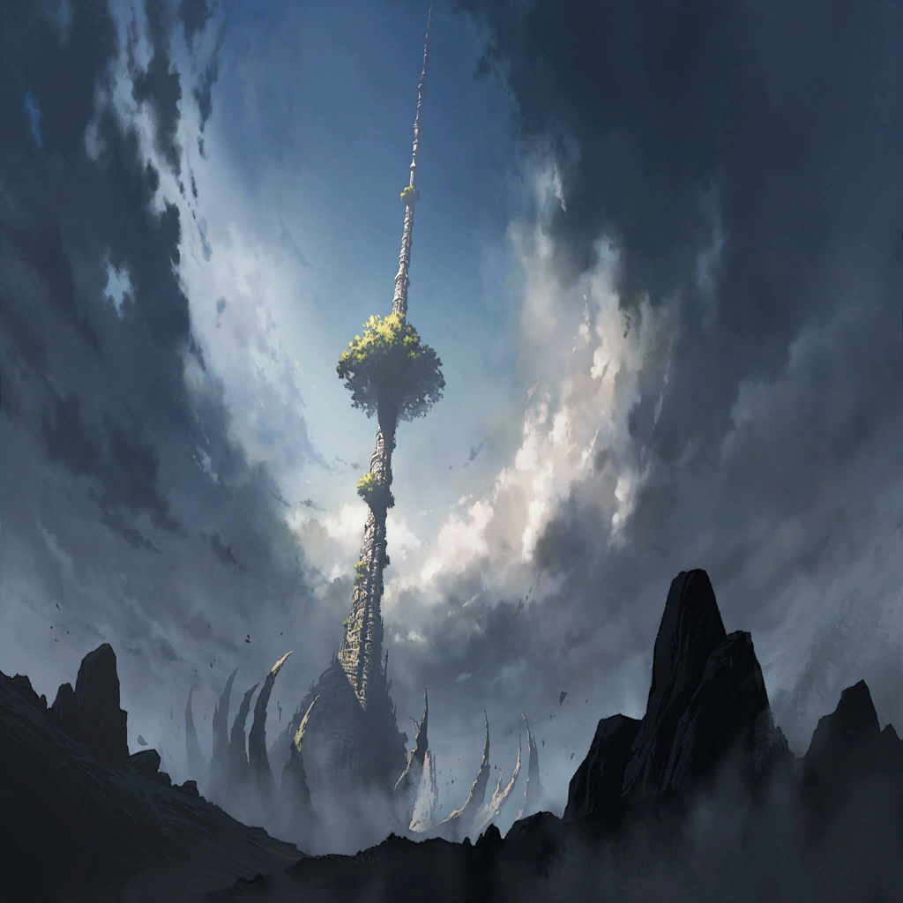

|
|  |
 |

ロギ |
陛下 |
| ローレル |
…来たか |
| ローレル |
バベルの塔周辺を占拠していた
バベル聖騎士団の排除は完了した |
| ローレル |
…ここから先は、お前たちの仕事だ |
ロギ |
ああ。任せてくれ |
ロギ |
必ず、アヴィスを止めて見せる |
| ローレル |
良い覚悟だ
んじゃ、ついて来い |
ロギ |
？ ついて来いって、どこに？ |
| ローレル |
バベル聖騎士どもが守っていた場所にな、
それらしいモンがあったんだよ |
| ローレル |
これから案内する場所が、おそらく
この塔の入り口だ |
 |
ロギ |
ここは―― |
| ローレル |
俺がこいつを見るのは二度目だが…
お前らの中にはもう何度か見てる奴も
いるんだろう？ |

エドガー |
…聖石の試練に続く扉、か |
エドガー |
間違いない
ロストブルーやルストにあったのと
同じもんだ |
エドガー |
けど、こいつが塔への扉？
どういうこった |

カムイ |
…疑問ではあった |
カムイ |
真理の扉。聖石の試練
俺たちはそれらの場所を、何か特別な
異空間のようなものだと考えていた。だが |
カムイ |
…もしや、それらの場所は――
バベルの塔の内部だったのか？ |
ロギ |
…どちらにしろ |
ロギ |
入ってみれば、わかることだ |
ロギ |
…開かない？ |

ディオス |
以前のように転移も起こらないな
…ローレル、どういうことだ？ |
| ローレル |
落ち着け。俺が知るはずないだろ |
| ローレル |
そこんところ、どーなんだい？
専門家的にはさ |
カムイ |
俺は別に錬金術の専門家ではないが… |
エドガー |
おぉ？ |
カムイ |
…これは |
 |
|
カムイ |
――――ッ |

ティナ |
カムイ？ どうしたんだ |
カムイ |
今、声が―― |
ティナ |
声？ |
カムイ |
“聖石をかざせ”…
そう言ったのか？ |
エドガー |
…石をかざす？
こんな感じか？ |
エドガー |
うおっ!? |

リズベット |
わわ、なにっ――!? |

アマネ |
マンモンが、光って… |
ディオス |
サタンが反応している…!? |
| ローレル |
…っ、おい！
今の光って前にロギが消えた時の―― |
| ローレル |
…おーい？ |
| ローレル |
…………ああ、そうか。行ったか
たく、情緒もなんにもないよな、ホント |
| ローレル |
…負けるなよ、ロギ |
 |
ロギ |
――ここは |
ロギ |
これが、バベルの塔の内部なのか？ |
カムイ |
そのようだ。注意しろ、皆
この空間には地上では考えられないほど
高密度のアルケミィが満ちている |
カムイ |
何が起こってもおかしくない…
それこそ自分の影が突然立ち上がって
襲いかかってくるかもしれん |
ディオス |
…妙に具体的で実感の籠ったたとえだが、
もしかして実体験か？ |
カムイ |
まあ、似たような経験はある
気を抜くな |
アマネ |
――誰だ |
| ？？？ |
誰、とは御挨拶ですねえ
俺と皆さんの仲じゃありませんか |
ディオス |
この声、まさか |
| ？？？ |
いやしかし、素晴らしい
ここに来たということは、あの悪竜を――
ワギナオ・クレイドルを倒したワケですか |
| ？？？ |
やはり、英雄とは不可能を可能にして
しまうものなんですかね？
ああ、それとも―― |
| キーノ |
意外と耄碌してました？ 彼 |
カムイ |
…キーノ |
エドガー |
おいおい、出番の終わった役者が
まだ舞台で踊るつもりかよ
ちょっとばかりイタくねえか？ |
エドガー |
そのワギナオにも言われてただろうが
アンタはもう終幕だってよ |
| キーノ |
ええ、ええ！ ですから…ね？
ここからは“次の公演”というわけです |
| キーノ |
それに、旬の過ぎた役者は
俺ひとりではありませんよ？ |
エドガー |
何…？ |
| ？？？ |
…キーノちゃんさあ
その紹介の仕方だと、
あたし滅茶苦茶出にくいんだけど？ |
エドガー |
…！ |
| キーノ |
おっと、これは失礼
では改めまして―― |
| キーノ |
――我らが叡智。我らが悪逆
そしてバベル聖騎士団の紅一点―― |
| キーノ |
元バベル聖教会異端審問官長
ラバンダート・イグナシオ様のご出陣～ |
| ラバンダート |
どっちにしても恥ずかしいな！
まあ、なんだ―― |
| ラバンダート |
今さら幻影兵のひとりやふたり、
驚くこともないだろう？ |
エドガー |
ラバンダート・イグナシオ… |
ディオス |
つまりお前たちは…
アヴィスが俺たちを足止めする為に
錬成した捨て駒というわけだ |
| ラバンダート |
その通り！ まあ、
命じられたのは足止めじゃなくて―― |
| ラバンダート |
この場で君たちを殺すこと、
なんだけどね？ |
| ラバンダート |
オォォォォォォォオオオオオ!!! |
| キーノ |
気が早いですねえ、ラバンダートさんは
もう少し会話とか楽しみません？ |
| ラバンダート |
そう？
そんなの別に後でいいじゃないか |
| ラバンダート |
このまま彼らを縊り殺して――
捕らえた魂を無理矢理錬成して、
会話はその後すればいい |
| キーノ |
…まあ、その通りなんですが…
いえ、もういいです
あなたに情緒とか求めるのは無駄でしたね |
| ラバンダート |
ああ、なにせ
あたしは人間じゃないからねえ！ |
| キーノたち |
さあ、始めましょうか。英雄の皆様―― |
| キーノたち |
世界の命運をかけた、
今世紀最大のドタバタ劇を、ね…!! |
ディオス |
いいや、悪いが――
その公演はキャンセルだ！ キーノォ…！ |